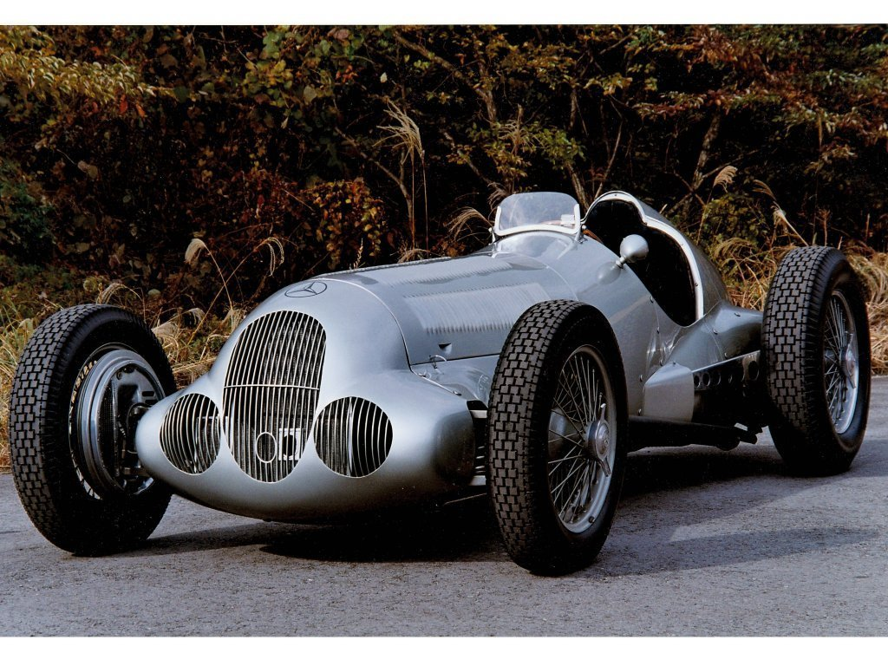
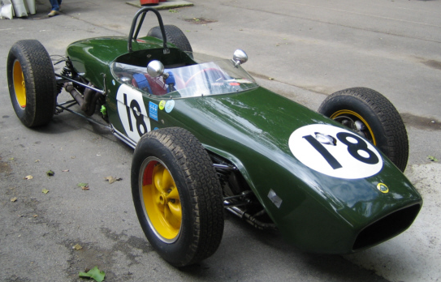
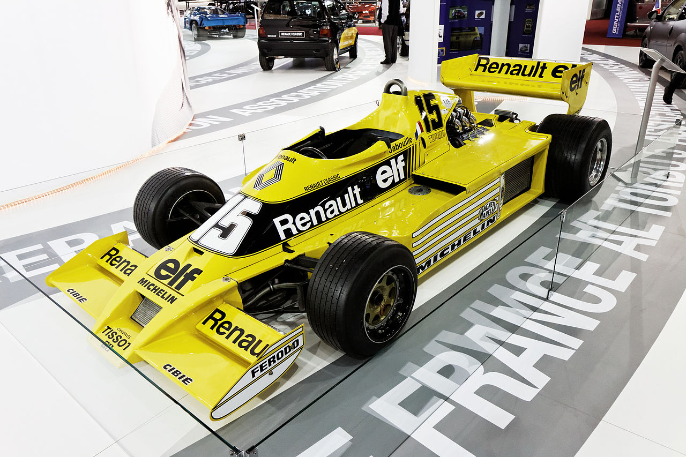
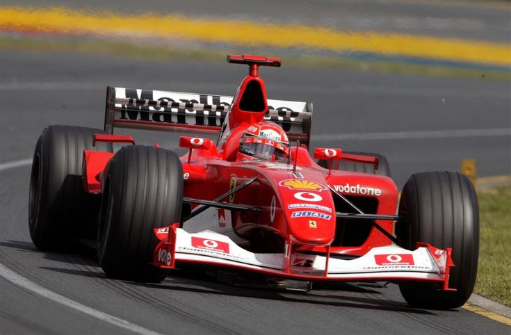
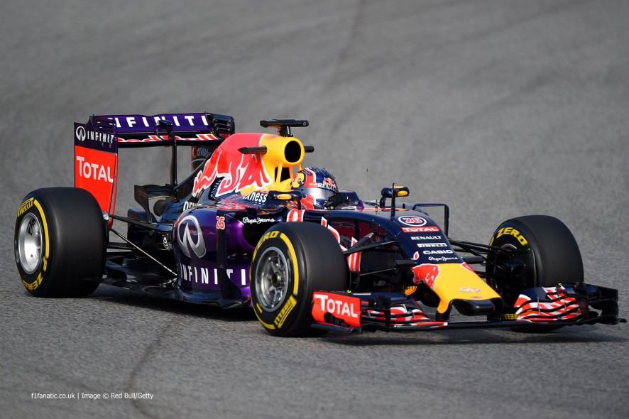

Általános információ
A Formula–1-es autókkal a Formula–1-ben versenyeznek. Ezeket az autókat a FIA szabályai szerint építik s készítik fel a versenyekre. Minden évben fejlesztik őket, hogy minél jobbak, minél biztonságosabbak legyenek. A Formula 1-es autók hosszúnak és könnyűek. A verseny előtt van 4-5 kör bemelegítő kör, hogy felmelegedjenek a gumik gyári hőfokra. Miután felmelegedtek a gumik, jobban fognak tapadni.

50-es, 60-as évek
Hivatalosan 1950-ben rendezték meg az első világbajnokságot. Ebben a korszakban a versenyzők még a második világháború előtt épített autókat használtak. Erre az időszakra jellemző, hogy az autók laposak voltak, a motor elöl volt, a gumijaik pedig keskenyek és díszesek voltak, a tapadásuk alacsony.
{kind=link}
70-es évek
A 70-es évek vége nagyon sok újítást hozott. Ebben az időszakban kezdték megépíteni az autókat olyan alakúra, amilyenek a mostani Formula–1-es autók: aerodinamikusak, vastag gumival rendelkeznek, amelyek segítik a jobb tapadást. 1977-ben megjelentek a V12-es motorok, illetve a szívóhatású felszerelések is.
{kind=link}
80-as évek
1983-tól minden autó turbómotoros, amelynek a teljesítménye 1000–1500 lóerő között volt. Hogy megelőzzék a halálos baleseteket, 1987-ben korlátozták a motorok teljesítményét 750 lóerőre.
{kind=link}
90-es évek
Az 1990-es években bevezettek egy csomó elektronikus kiegészítőt, mint például: ABS, kipörgésgátló, aktív felfüggesztés, kormány mögötti sebességváltók stb. A 90-es évektől kezdődően a Formula–1-es autók egyre biztonságosabbak lettek.
{kind=link}
2000-es évek
2003-tól kezdődően egy csomó új technikával kezdték ellátni az autókat, mint például mozgatható hátsószárnyak, DRS. A legutóbbi Formula 1 "era" tavaly ért véget, idén megváltoztatták a motort, illetve számos más összetevőt is az autókban.
{kind=link}